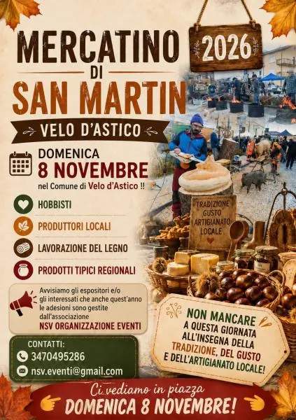

dom 8 nov
Mercatino di San Martin
Domenica 8 Novembre 2026, l’Associazione Culturale NSV Organizzazione Eventi APS, affiliata A.I.C.S. – Comitato Provinciale di Rovigo, sarà presente a Velo d’Astico (VI) in occasione dell’“Antica Sagra de San Martin”, con il tradizionale “Mercatino di San Martin”, allestito…
 Indicazioni
Indicazioni
- Costi e prenotazioni
- Costo non indicato · Prenotazione non indicata
- Programma
- Programma da verificare. Apri la fonte ufficiale per orari e possibili aggiornamenti.
- In caso di maltempo
- Nessuna indicazione specifica pubblicata.
- Note
- Acquisito automaticamente dalla fonte.
L’EVENTO
Descrizione completa
Domenica 8 Novembre 2026, l’Associazione Culturale NSV Organizzazione Eventi APS, affiliata A.I.C.S. – Comitato Provinciale di Rovigo, sarà presente a Velo d’Astico (VI) in occasione dell’“Antica Sagra de San Martin”, con il tradizionale “Mercatino di San Martin”, allestito lungo le vie del Centro Cittadino dalle ore 10:00 alle ore 19:00.
Una giornata dedicata alla scoperta delle tradizioni popolari, dell’artigianato artistico e delle opere d’ingegno creativo, con espositori che proporranno oggetti originali, curiosità e tante idee regalo per la casa e il tempo libero. Non mancheranno le dimostrazioni pratiche delle tecniche di lavorazione, per vedere da vicino la manualità e la creatività che caratterizzano gli antichi mestieri artigiani.
Spazio anche ai sapori della tradizione, con una rassegna di prodotti enogastronomici tipici regionali e italiani, degustazioni e specialità alimentari dolci e salate, molte delle quali realizzate artigianalmente secondo ricette e lavorazioni legate alla tradizione.
Ad arricchire il percorso del mercatino saranno inoltre gli espositori dedicati alla Salute Naturale, con prodotti, rimedi e servizi rivolti al benessere, alla cura del corpo e a uno stile di vita più consapevole e sostenibile.
Il tutto sarà inserito in un allestimento dal sapore antico, con tavoli provvisti di copertura e un’ambientazione ispirata ai tradizionali mercatini di una volta, per ricreare un’atmosfera semplice, autentica e suggestiva.
Il programma dell’Antica Sagra de San Martin accompagnerà la giornata con numerose iniziative per grandi e piccoli. Tra gli appuntamenti in programma, l’Esposizione dei Trattori d’Epoca, l’apertura dello Stand Gastronomico in Piazza San Martino con i tradizionali “Piatti de na volta”, le dimostrazioni di scultura su legno e, nel pomeriggio, la tanto attesa “Grande Maronada”, con caldarroste e vin brulè per tutti.
Non mancheranno inoltre il divertente Tiro al Trattore, momenti di Animazione e Spettacolo e tutte le iniziative che contribuiranno a ricreare l’atmosfera autentica e conviviale della festa di San Martino.
Per info Mercatino e partecipazione come Espositore: Raffaella 347.0495286
Email: nsv.eventi@gmail.com
https://www.facebook.com/NsvOrganizzazioneEventi
IL PROGRAMMA
Programma e orari
Appuntamenti raccolti dalle fonti elencate. Dove manca un orario, non è ancora disponibile in questa scheda.
Programma pubblicato
- Dal 2026-11-08 al 2026-11-08
INFORMAZIONI UTILI
Prima di partire
- Controllare la fonte prima di partire.
ORGANIZZAZIONE